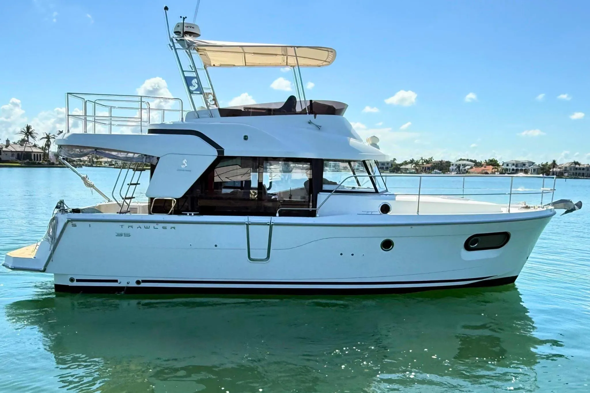

B-Scout Boat Guide · BENE-35-SW
Beneteau Swift Trawler 35 Flybridge
2017–2024
The Beneteau Swift Trawler 35 succeeded the 34 with a more contemporary two-cabin interior while retaining single-diesel shaft propulsion, semi-planing hull form and a substantial flybridge. It is aimed at extended family or couple cruising rather than low-speed trawler operation alone.

- Length
- 37 ft
- Beam
- 13.25 ft
- Draft
- 3.83 ft
- Hull behaviour
- Semi-Displacement
- Fuel
- Diesel
- Propulsion
- Shaft
- Engine configuration
- Single Cummins 425 hp diesel inboard
- Boat family
- Trawler
- Construction
- Fiberglass
Best for
- Couples or small families undertaking extended cruising
- Great Loop and coastal cruising where beam is acceptable
- Buyers wanting a modern single-engine flybridge cruiser
Trade-offs
- 13-foot-plus beam increases slip and haul-out requirements
- Flybridge creates significant air draft and exterior exposure
- Systems complexity is higher than on simpler traditional trawlers
Known concerns
- No model-specific concern has been promoted to B-Scout’s evidence threshold. This does not mean the model has no age-, condition- or hull-specific risks.
Inspection focus
- Inspect flybridge deck, seating bases and helm penetrations
- Inspect Cummins cooling, exhaust, shaft and stern gear
- Inspect deckhouse glazing and side door seals
- Review sanitation, electrical, heating and charging systems
Continue researching
Related boat models
Beneteau Swift Trawler 34 Flybridge or Sedan
36.02 ft · Semi-Displacement
Beneteau Swift Trawler 30 Flybridge
32.75 ft · Semi-Displacement
Beneteau Antares 11 Coupé
36.58 ft · Planing
Beneteau Swift Trawler 47 Flybridge
48.33 ft · Semi-Displacement
Beneteau Swift Trawler 48 Flybridge
48.33 ft · Semi-Displacement
Back Cove 32 Downeast Cruiser
37 ft · Semi-Displacement
About this record
B-Scout preserves uncertainty: missing information remains unknown rather than being treated as a negative. Specifications and guidance describe the model record; individual boats can differ by year, equipment, refit and condition.